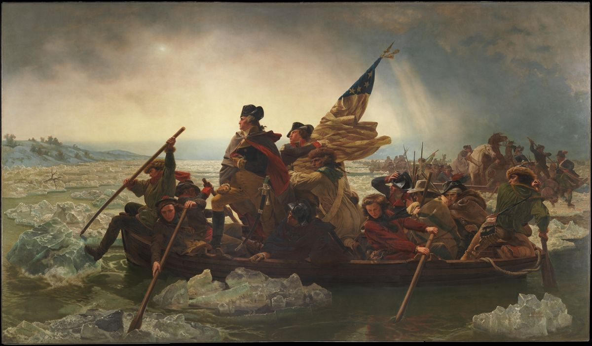
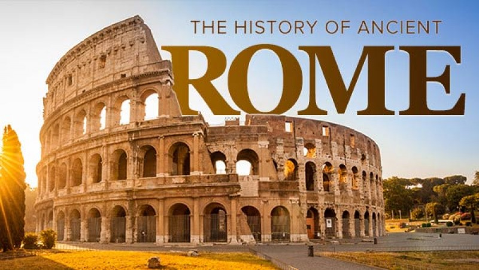
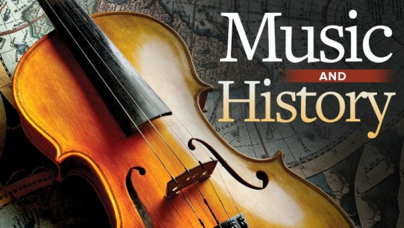
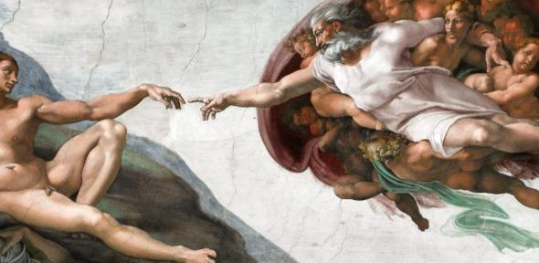

American History
The American Revolution was a time when the British colonists in America rebelled against the rule of Great Britain. There were many battles fought and the colonies gained their freedom and became the independent country of the United States. The American Revolutionary War lasted from 1775 until 1783. 13 Colonies Before the American Revolution, there were several British Colonies in the Americas. Not all of them participated in the revolution. There were 13 colonies which ended up rebelling. These were Delaware, Virginia, Pennsylvania, New Jersey, Georgia, Connecticut, Massachusetts, Maryland, North Carolina, South Carolina, New Hampshire, New York, and Rhode Island.
-----Representation One of the main reasons that the colonists rebelled against Great Britain is that they felt they were not represented in the British government. The British government was making new laws and taxes on the colonies, but the colonies had no say. They wanted to have some say in the British government if they were going to pay high taxes and have to live by British law.
---------War didn't happen right away. First there were protests and arguments. Then some small skirmishes between the colonists and the local British army. Things just got worse and worse over the course of years until the colonies and Great Britain were at war. Independence Each colony had its own local government. In 1774 they each elected officials to represent them at the First Continental Congress. This was the first effort of the colonies to unite and make a single government. In 1776 the Second Continental Congress declared the independence of the United States from Great Britain.
Roman History
The exact origins of the city of Rome are still somewhat of a mystery. There are several theories all based on the writings of ancient authors and the archaeological discoveries. For this reason, the founding of Rome is based mainly on legend and myth, instead of solid facts and figures. The existence of a Roman Kingdom was even questioned during practically two centuries by expert historians. During the nineteenth and twentieth century, they dismissed the idea of the early kings of Rome (Romulus, Numa Pompilius, Tullus Hostilius) as well as the date of the founding of what would later become the capital of Italy, in 753 BC. This part of history was merely considered a legend and not taken seriously.
It was only during the late twentieth century when, thanks to the findings of numerous archeological digs and other sciences, that the myths surrounding the establishment of the city and its first rulers were reconsidered. It is believed that the first inhabitants of Rome came from various parts of the region, and had neither the economic nor the cultural development of their northern neighbors, the Estrucans, nor the southern civilization called the Sabines and Latins.In the Palatine Hill archeologists found the remains of a primitive settlement from the eighth century BC, with burials on the outskirts of the village. It is thought that as the population grew, the inhabitants settled on the slopes of the nearby hills, and during the next century they established themselves in the valley
Music History
Music history, sometimes called historical musicology, is a highly diverse subfield of the broader discipline of musicology that studies music from a historical point of view. In theory, "music history" could refer to the study of the history of any type or genre of music (e.g., the history of Indian music or the history of rock). In practice, these research topics are often categorized as part of ethnomusicology or cultural studies, whether or not they are ethnographically based. The terms "music history" and "historical musicology" usually refer to the history of the notated music of Western elites, sometimes called "art music" (by analogy to art history, which tends to focus on elite art).
The methods of music history include source studies (esp. manuscript studies), paleography, philology (especially textual criticism), style criticism, historiography (the choice of historical method), musical analysis, and iconography. The application of musical analysis to further these goals is often a part of music history, though pure analysis or the development of new tools of music analysis is more likely to be seen in the field of music theory. Some of the intellectual products of music historians include editions of musical works, biography of composers and other musicians, studies of the relationship between words and music, and the reflections upon the place of music in society..
Art History
Italian painter, draftsman, sculptor, architect, and engineer whose genius, perhaps more than that of any figure, epitomized the Renaissance humanist ideal. His "Last Supper" (1495-97) and "Mona Lisa" (1503-06) are among the most widely popular and influential paintings of the Renaissance. His notebooks reveal a spirit of scientific inquiry and a mechanical inventiveness that were centuries ahead of their time.
The unique fame that Leonardo enjoyed in his lifetime and that, filtered and purified by historical criticism, has remained undimmed to the present day is based on the equally unique universality of his spirit. Leonardo's universality is more than many-sidedness. True, at the time of the Renaissance and the period of humanism, many-sidedness was a highly esteemed quality; but it was by no means rare. Many other good artists possessed it. Leonardo's universality, on the other hand, was a spiritual force, peculiarly his own, that generated in him an unlimited desire for knowledge and guided his thinking and behaviour. An artist by disposition and endowment, he found that his eyes were his main avenue to knowledge; to Leonardo, sight was man's highest sense organ because sight alone conveyed the facts of experience immediately, correctly, and with certainty. Hence, every phenomenon perceived became an object of knowledge. Saper vedere ("knowing how to see") became the great theme of his studies of man's works and nature's creations. His creativity reached out into every realm in which graphic representation is used: he was painter, sculptor, architect, and engineer. But he went even beyond that. His superb intellect, his unusual powers of observation, and his mastery of the art of drawing led him to the study of nature itself, which he pursued with method and penetrating logic--and in which his art and his science were equally revealed.
Microverse History
The Global School for Remote Software Developers No matter where you are in the world, Microverse trains you to become a remote software developer and connects you with life-changing professional opportunities. The best part? You don’t pay anything until you get a job! Your Coding Partner and Stand-Up Team Learning to code on your own can be lonely and difficult. At Microverse, you’ll join one of the most collaborative and social online school in the world.
Every day, you, your coding partner, and your stand-up team will support and hold each other accountable to produce great work while remote pair programming. A World-Class Curriculum Our curriculum focuses on helping you learn the most in-demand skills in software development so you can get a great job no matter where you are.During the program, you’ll build 30+ projects, develop a strong computer science foundation, and improve the “soft skills” that employers love. At the end of the program, your personal career coach will help you land your dream job and even negotiate your job offers.